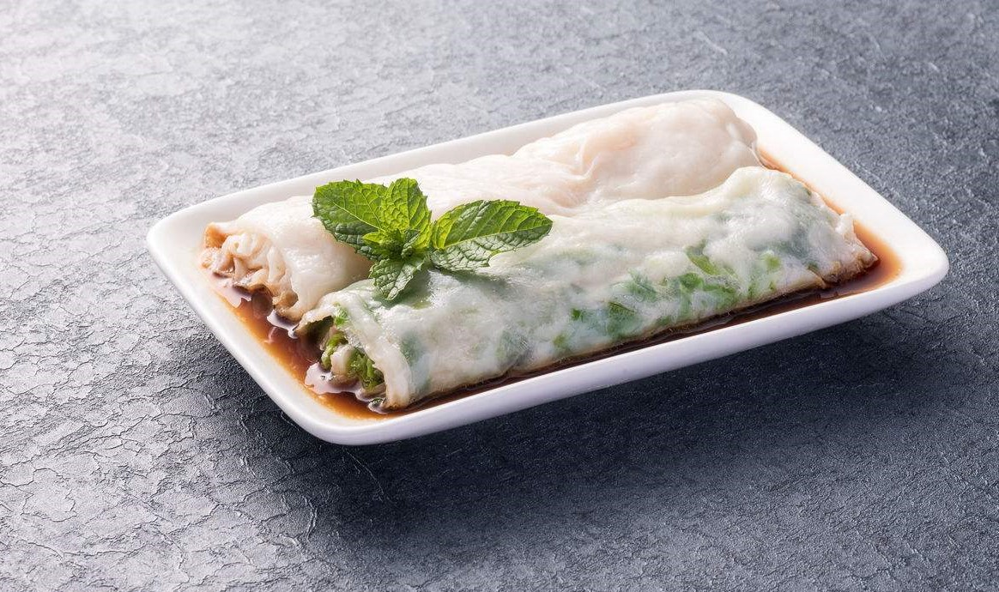
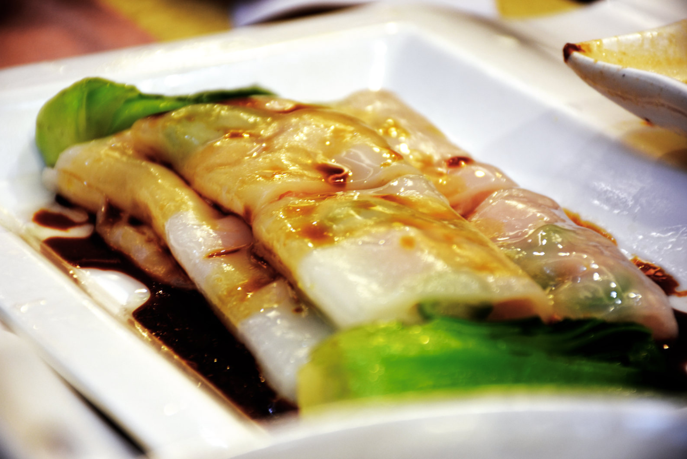

广式拉肠
拉肠是一种使用米浆作成的广东地区传统名吃之一，又称布拉肠，西关肠粉，肠粉，猪肠粉等，发源于广东老西关地区。广东肠粉主要流派有两种一种西关布拉肠，另一种是抽屉式肠粉。传统以碎肉、鱼片、虾仁为馅。也是港式酒楼常见的点心，一般常见的以鲜虾肠粉、牛肉肠粉和叉烧肠粉为主。
拉肠分类
广东拉肠要流派有两种:一种是布拉肠，另一种是抽屉式肠粉，由于使用的制作工具不同，所以导致做出的肠粉都不相同。布拉肠粉是以品尝馅料为主（肠粉浆大部分是使用粘米粉再添加澄面,粟粉和生粉），而抽屉式肠粉（肠粉浆是使用纯米浆做成）主要品尝肠粉粉质和酱汁调料！如今肠粉是广东茶楼、酒家早茶夜市的必备之品。潮汕地区的肠粉与广东地区的肠粉制作方式相同，但是由于配料不同，因而口味也有较大的地区差异。布拉肠粉是将米浆置于布上蒸成，又叫布拉蒸肠粉。
拉肠制作过程
主料
粘米粉250g、水750g。
辅料
油适量、盐适量、楜椒粉适量、鸡精适量、肉末150g、马蹄粉20g、玉米粉150g。
制作方法
1.所有的粉和水混一起搅匀。
2.加调味料，记得加点油。
3.准备好肉末。
4.盘子里刷油。
5.把米糊放到盘子里。
6.加肉再放到烧开了水的龟锅里蒸，一会就行了。
7.熟了，用刮刀卷起。
8.装碟子里。